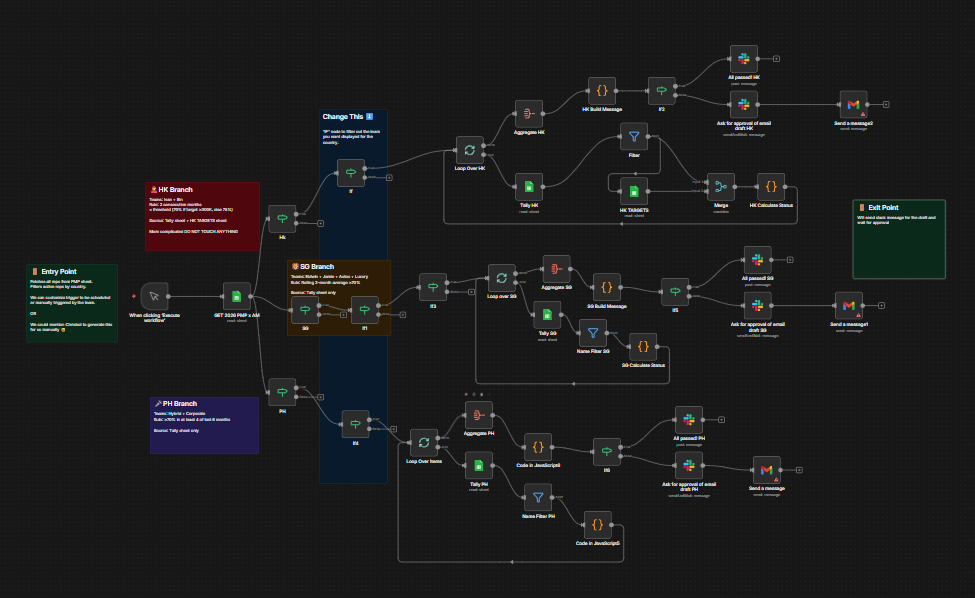

Monthly AM performance evaluation across three markets — from a process involving 4 people and 2 days of back-and-forth, to a single Slack approval button.
Every month-end, Sales Ops manually pulled numbers, cross-checked performance across markets, calculated incentives, and chased manager approvals. Four people were involved in the verification chain, with up to 2 days for managers to validate data.
Human error risk in incentive calculations was constant. Individual AMs had no visibility into their performance until reports were manually distributed, creating frustration and delays in the feedback loop.
A 48-node workflow that pulls PMP evaluation data from Google Sheets, filters by market (Singapore, Hong Kong, Philippines), runs custom JavaScript scoring logic per AM, aggregates results, and delivers personalized Slack messages and Gmail reports.
The key interaction: the manager receives a single Slack message showing all AM metrics with traffic-light indicators, and hits one Approve button. That approval triggers individualized Gmail sends to each AM. Calculations are done before the manager sees anything — so the approval is a decision, not a validation exercise. Data is absolute, not dependent on manual cross-checks.
Additional workflows in this cluster that keep operations running without manual overhead:
Gmail trigger monitors for invoice emails, parses the attachment, routes to Peakflo automatically. Finance never manually touches invoice emails.
Triggers when a merchant's coin balance drops below threshold, checks conversion status and home service flag, sends via WhatsApp, tracks sequence stage to prevent duplicate sends.
Takes leads from a sheet, queries Salesforce for duplicates, creates lead records, assigns to AMs via routing logic, sends email notifications, writes Salesforce URL back to source sheet.
Loops through lead sheet, queries Salesforce by Carousell User ID, detects market to format numbers correctly, writes WhatsApp numbers and SF links back to sheet for outreach team.

SG/HK/PH branches visible with JavaScript scoring nodes and the Slack + Gmail output nodes at the end
Let's build intelligent systems that eliminate manual overhead and keep your operations running smoothly.